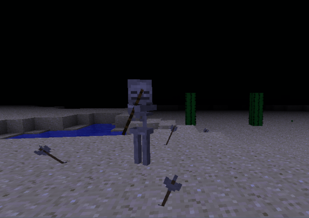
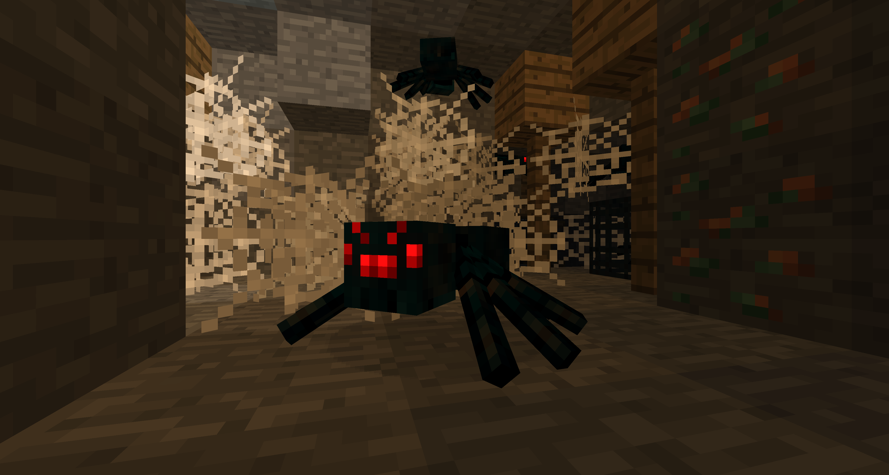
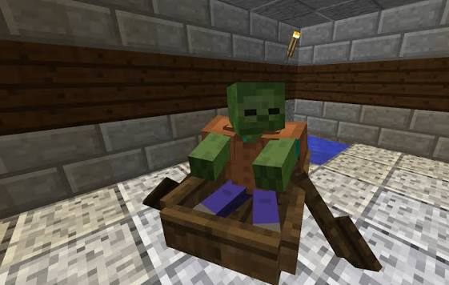
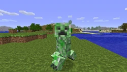

Main adjustments
This section details the balancing adjustments applied to the Mobs. The goal of these changes were to improve the combat experience, smooth out the difficulty curve, and make every encounter more tactical and difficult.
First but not least! all the mobs can break boats! NO MORE BOAT TRAPPS, it will be funny to make an enderman farm, yes also the endermites are capable of breaking the boat!
Now skeletons have the half of health but don't be so happy now there's some "funny" changes pal.

The so loved cave Spiders are much more fast (i know you loved that changes) but only have 2 hearts


Zombies are much more fast now, walking won't be an option and in the blood moon maybe even runing will be...

The explosives ones, Creepers now will have a random explosion time, maybe longer, maybe shorter you won't know when it will explode